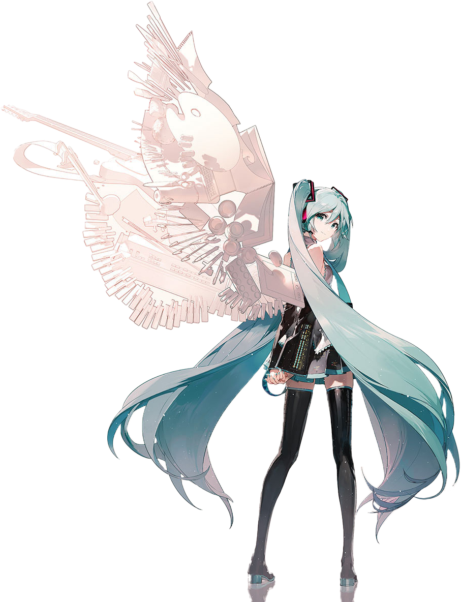

クリプトン・フューチャー・メディア株式会社が開発した、
歌詞とメロディーを入力して誰でも歌を歌わせることができる「ソフトウェア」です。
大勢のクリエイターが「初音ミク」で音楽を作り、インターネット上に投稿したことで一躍ムーブメントとなりました。
「キャラクター」としても注目を集め、今ではバーチャル・シンガーとしてグッズ展開やライブを行うなど多方面で活躍するようになり、人気は世界に拡がっています。


Best Feature
未来感
futuristic
可憐
cute
歌声
voice
Event

-
マジカルミライ
-
ライブと企画展とを同時開催しているイベント。主に主要都市などで開催されているが、近年では福岡や仙台といった地方都市でも開催されており学生とのコラボなど、地域連動企画による地域活性化に貢献している。
2013年から毎年開催しつづけ、前回までの12年間で累計50万人を動員。
毎年イベントテーマが変わり、ビジュアルなどはこのテーマにあわせて制作・展開している。

-
雪ミク
-
クリプトン社が実施している雪ミクの祭典。期間中はグッズ・アパレル品・飲食品が販売されたり小売・各種機関・施設・団体とのコラボが実施され、ラッピング車両も運行される。2010年から毎年開催されており、年を追うごとに規模が大きくなっている。毎年ではないが公式ライブコンサートが実施されることもある。

-
MIKU EXPO
-
初音ミクが世界各地を巡るイベント。日本や現地クリエイターによる展示やクラブイベントなどが実施されている。
2014年から開催しつづけ、2024年終了時点で世界46都市にて計111公演が行われている。
コンサートに加えて展示企画も実施する事から「HATSUNE MIKU EXPO」と命名された。

-
初音ミクシンフォニー
-
初音ミクを中心とした楽曲をフルオーケストラで演奏するコンサート。
2016年から毎年開催しつづけ、今年で十周年。
東京フィルハーモニー交響楽団など、プロのオーケストラが演奏を担当し、生演奏でしか味わえない迫力がある。
HATSUNE MIKU